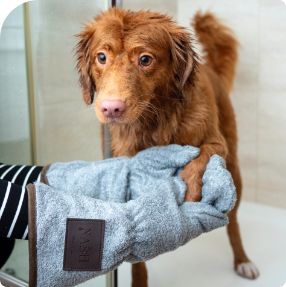

Груминг собак – очень важное мероприятие
для любой собаки, независимо от породы,
размера и возраста.
Регулярные процедуры по уходу за шерстью,
когтями, зубами, глазами и ушами обеспечивают
здоровье собаки на долгие годы.
Здоровой собаке
нужен здоровый уход
нужен здоровый уход
Регулярный груминг помогает предотвратить различные заболевания
01.
Кроме того, груминг может помочь укрепить связь между владельцем и животным, так как это время, проведенное вместе.

Основные процедуры
Уход за домашними собаками состоит из нескольких процедур,выполняемых поэтапно
Виды груминга
Профессиональный груминг необходим для собак с густой и жесткой шерстью, а также для питомцев, участвующих в выставках и соревнованиях.

01.
Гигиенический
Домашние процедуры по уходу, направленные на поддержание гигиены животного.
02.
Профессиональный
Выполняется в специализированных салонах. Включает процедуры по уходу и модельные стрижки.
03.
Эстетический
Фигурная стрижка шерсти, отбеливание зубов, татуаж и другие процедуры, выполняемые с целью подготовки животного к выставкам и фотосессиям.
Этапы груминга
Шерсть животного тщательно расчесывается, удаляются колтуны и старые волоски. Используются специальные щетки и расчески.
Шаг 1
Шаг 2
Модельная стрижка шерсти и гигиеническая обработка глаз.
Шаг 3
Чистка ушей и зубов, cтрижка когтей с использованием когтерезки.
Шаг 4
Водные процедуры. Шерсть и кожа животного тщательно вымывается с использованием специальных шампуней и других средств для ухода за животными.
Шаг 5
Обтирание шерсти полотенцем и просушивание феном.@@